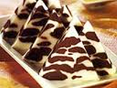

Bahan-Bahan :
Bahan Larutan putih:
750 ml susu cair
9 gram agar-agar putih
150 gram gula pasir
2 kuning telur
250 ml krim kental
Bahan Larutan coklat:
500 ml susu cair
120 gram gula pasir
5 g agar-agar putih
150 g cokelat masak pekat, lelehkan
2 kuning telur kocok
Bahan Vla:
500 ml air jeruk manis
200 gram gula pasir
3 sendok makan maizena, larutkan dengan
3 sendok makan air
Cara Mengolah :
Membuat Larutan Putih:
1. Masak susu cair, agar-agar, gula pasir, hingga mendidih.
2. Kocok kuning telur, tambahkan 1 sendok sayur susu cair, aduk rata.
3. Tambahkan krim kental. Aduk rata.
4. Tuangkan adonan ke dalam panci. Panaskan hingga mendidih. Angkat.
5. Biarkan hingga setengah keras.
Membuat Larutan Cokelat:
1. Masak susu cair, gula pasir, agar-agar, cokelat, hingga mendidih.
2. Kocok kuning telur. Tambahkan 1 sendok sayur susu. Aduk rata.
3. Tuang kembali ke dalam adonan agar-agar. Aduk rata hingga mendidih. Sisihkan.
4. Biarkan hingga setengah keras.
Membuat Vla:
1. Rebus air jeruk manis, gula pasir, larutan maizena. Aduk rata.
2. Ambil 1 sendok sayur susu ke dalam kuning telur aduk rata.
3. Masukkan kembali ke adonan susu. Aduk rata hingga mendidih. Angkat. Aduk-aduk.
Penyelesaian:
1. Siapkan cetakan segitiga (volume 1500 ml).
2. Basahi dengan air.
3. Tuang adonan putih dan cokelat bergantian, hingga menyerupai batik.
4. Bekukan.
5. Sajikan puding bersama vla.